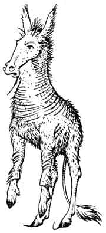

Gülünç Rabadash
Yolda, bir sonraki dönemeçte, ağaçların arasından çıktılar ve orada, yeşil tarlaların ötesinde, arkasındaki yüksek ve ormanlık sırtların kuzey rüzgârlarından koruduğu, Anvard Kalesi’ni gördüler. Çok eski bir kaleydi ve kiremit ve kahverengi taşlarla inşa edilmişti.
Kapıya ulaşmadan önce Kral Lune onları karşılamak üzere dışarı çıktı. Aravis’in düşündüğü krallar gibi görünmüyordu; eski püskü giysiler giymişti, çünkü av köpeklerinin bakıcısı olan uşağıyla birlikte köpeklerin kulübelerini dolaşmayı yeni bitirmişti. Sadece köpeklere dokunduğu için, ellerini yıkamak üzere bir an duraklamıştı. Fakat Aravis’in elini tutarken yaptığı reverans bir imparatora yakışır biçimdeydi.
“Küçük bayan” dedi, “bütün kalbimle hoş geldin diyorum. Eğer karım hayatta olsaydı, konukseverliğimizi daha iyi gösterebilirdi. Ama benim için bundan daha büyük zevk olamaz. Başına gelen talihsizlikler ve babanın evini, üzülerek de olsa, terk etmek zorunda kaldığın için çok üzgünüm. Oğlum Cor, kahramanlıklarını ve birlikte yaşadığınız maceraları bana anlattı.”
“Bütün kahramanlıkları yapan oydu efendim” dedi Aravis. “Beni kurtarmak için bir aslana saldırdı.”
“Ah, bu da ne?” dedi Kral Lune, yüzü aydınlanarak. “Hikâyenin bu kısmını duymamıştım.”
O zaman Aravis her şeyi anlattı. Hikâyenin bilinmesini çok isteyen, ancak anlatamayacağını hisseden Cor, bundan pek de hoşlanmamıştı aslında. Kendini aptal gibi hissediyordu. Fakat bundan çok hoşlanan babası birkaç hafta boyunca o kadar çok kişiye anlatacaktı ki, Cor bütün bunları hiç yaşamamış olmayı isteyecekti.
Sonra Kral, Hwin ve Bree’ye döndü. Onlara da Aravis’e olduğu kadar nazik davranarak, aileleri ve yakalanmadan önce nerede yaşadıkları hakkında birçok soru sordu. Atların neredeyse dilleri tutulmuştu. Ne de olsa insanların – yani yetişkin insanların – kendileriyle eşit bir konumda konuşmasına henüz alışmamışlardı. Onlar Aravis ve Cor’a alışmışlardı.
Biraz sonra Kraliçe Lucy kaleden çıkıp onlara katıldı. Kral Lune, Aravis’e “Sevgili kızım, işte evimizdeki sevgili dostumuz” dedi. “O, benim becerebileceğimden çok daha iyi bir şekilde senin odanı hazırlatıyordu.”
“Gelip görmek istersin değil mi?” dedi Lucy, Aravis’i öperek. Birbirlerini hemen sevmişlerdi. Biraz sonra beraberce, Aravis’in yatak odası, özel odası, ona alacakları giysiler, böyle zamanlarda kızların konuşacağı her türden şey hakkında konuşmak üzere uzaklaştılar.
Terasta yedikleri yemekten sonra (soğuk kuş eti, soğuk turta, şarap, ekmek ve peynir) Kral Lune yüzünü buruşturdu, içini çekerek “Eyvah!” dedi, “dostlarım, o zavallı yaratık Rabadash hâlâ elimizde. Ona ne yapacağımıza karar vermeliyiz.”
Lucy, Kral’ın sağında, Aravis ise solunda oturuyordu. Masanın bir ucundaki Kral Edmund ile öteki uçta bulunan Lord Darrin yüz yüze oturuyordu. Dar, Peridan, Cor ve Corin kralın bulunduğu taraftaydılar.
“Majestelerinin onun kellesini uçurma hakkı kesinlikle var.” dedi Peridan. “Böyle bir saldırı – onun yaptığı gibi – bir katilinkiyle aynı şey!”
“Çok doğru” dedi Edmund. “Fakat bir hain bile yola gelebilir. Ben böyle birini biliyorum.” Çok düşünceli görünüyordu.
“Rabadash’ı öldürmek, Tisroc’a savaş açmak anlamına gelir.” dedi Darrin.
“Zerre kadar değeri yok o Tisroc’un” dedi Kral Lune. “O, gücünü sayıca üstün olmaktan alıyor. Ve o kalabalıklar asla çölü geçemez. Fakat bende soğukkanlılıkla adam öldürecek (hain bile olsa) mide yok. Savaşta onu boğazlamak, içimi yeterince rahatlatırdı, ancak bu tamamen farklı bir durum.”
“Benim önerim” dedi Lucy, “Majesteleri ona bir şans daha vermeli. Gelecekte dürüst davranacağına söz vermesi şartıyla serbest bırakılsın. Belki sözünü tutar.”
“Belki maymunlar da dürüst olabilir kardeşim” dedi Edmund. “Fakat Aslan’ın aşkına, bir gün sözünden yine dönerse bu, inşallah öyle bir yer ve öyle bir zamanda olur ki, içimizden biri onun, adil bir dövüşte kellesini uçurur.”
“Deneriz” dedi Kral ve refakatçilerden birine döndü: “Mahkûmu getirsinler dostum”
Rabadash zincirler içinde önlerine getirildi. Onu gören herhangi biri, geceyi iğrenç bir zindanda aç ve susuz geçirdiğini sanırdı; gerçekteyse oldukça rahat bir odaya kapatılmış ve mükemmel bir akşam yemeği verilmişti. Ancak o, yemeğine dokunmayacak kadar öfkeyle somurtarak ve bütün geceyi tepinip bağırarak ve küfrederek geçirdiği için, doğal olarak şimdi pek de iyi görünmüyordu.
“Ekselanslarına söylemeye gerek yok ki” dedi Kral Lune, “sağgörülü siyasete ve ulusal kanunlara dayanarak, bir faninin bir diğerinin başını almaya hakkı vardır. Bu nedenle bizim de geçerli nedenlerle, senin başını almaya hakkımız var. Yine de, köleler ve diktatörler ülkesinde, kuşkusuz nezaket ve centilmenlikten yoksun olarak büyütüldüğün için, gençliğine yorup sana zarar vermeden şu şartlarda serbest bırakmaya niyetleniyoruz: Birincisi—”
“Kahrolası barbar köpek!” diye zırvaladı Rabadash. “Senin şartlarını dinleyeceğimi mi sanıyorsun? Pöh! Yetiştirilmekten ve bir sürü bilmem neden söz ediyorsun. Zincirlenmiş bir adamla konuşmak kolaydır, ha! Bu rezil zincirleri çıkarın, bana bir kılıç verin ve ondan sonra içinizde cesareti olan varsa, tartışalım.”
Neredeyse bütün soylular ayağa fırladılar ve Corin, “Baba! Onunla dövüşebilir miyim? Lütfen” dedi.
“Sakin olun! Majesteleri! Lordlar!” dedi Kral Lune. “Bir salağın sataşmasından rahatsızlık duymayacak kadar ağırlığımız yok mu? Corin, otur ya da masayı terk et. Ekselanslarından yeniden şartlarımızı dinlemesini istiyorum.”
“Barbarların ve büyücülerin şartlarını dinlemem ben” dedi Rabadash. “İçinizden biriniz bile saçımın bir teline dahi dokunmaya kalkmasın. Bana ettiğiniz her hakareti, okyanuslar dolusu Narnia ve Archenland kanıyla ödersiniz. Tisroc’un intikamı korkunç olur, hatta şimdi bile. Eğer beni öldürürseniz, kuzey ülkelerindeki yakıp yıkmalar ve işkenceler, bin yıl sonra bile dünyayı korkutacak hikâyeler haline gelir. Dikkat edin! Dikkat edin! Dikkat edin! Tash’ın şimşekleri yukarıdan düşer!”
“Düşerken yolda çengele takılır mı?!” diye sordu Corin.
“Utan Corin” dedi Kral. “Senden daha güçlü olmadıkça, bir adamla asla alay etme; o zaman da eğer canın isterse.”
“Oh seni aptal Rabadash” dedi Kraliçe Lucy.
Cor, masadaki herkesin o anda neden ayağa kalktığını ve kıpırtısız bir şekilde durduğunu merak ediyordu. Kuşkusuz kendisi de aynı şeyi yapmıştı. Sonra bunun nedenini anladı. Kimsenin geldiğini görmemesine karşın Aslan aralarındaydı. Aslan’ın kocaman bedeni, kendisiyle yargılayanlar arasında yumuşakça yürürken, Rabadash irkilmişti.
“Rabadash” dedi Aslan. “Dikkatli ol. Sonun çok yakın ama hâlâ kurtulabilirsin. Gururunu (gururlanacak neyin var ki?) ve öfkeni (kim sana kötülük yaptı ki?) unut ve bu iyi kralların lütuflarını kabul et.”
O zaman Rabadash gözlerini kırpıştırdı ve ağzını açarak, neşesiz ve iğrenç bir biçimde sırıttı, kulaklarını aşağı yukarı oynattı (eğer zahmetine katlanırsa, bunu herkes öğrenebilir). Bu yaptığı, Calormen’de her zaman çok etkileyici olmuştu. Bunu yaptığında en cesur olanlar bile titrer, sıradan insanlar yere düşer, duyarlı insanlarsa genellikle bayılırdı. Ne var ki Rabadash’ın anlamadığı şey, emrettiği anda kendilerini canlı canlı kaynar suya attırabileceğini bilen insanları korkutmanın çok kolay olduğuydu. Bu surat buruşturmalar Archenland’da hiç de korkutucu değildi. Aslında Lucy, Rabadash’ın kusmak üzere olduğunu sanmıştı.
“İblis! İblis! İblis!” diye çığlık attı Prens. “Seni tanıyorum. Sen Narnia’nın iğrenç canavarısın. Sen Tanrıların düşmanısın. Benim kim olduğumu öğren, iğrenç hayalet. Ben merhametsiz ve dayanılmaz Tash’ın soyundanım. Tash’ın laneti senin üzerinde. Akrep şeklinde şimşekler yağacak üzerine. Narnia’nın dağları toza dönüşecek. Ve—”
“Dikkatli ol, Rabadash” dedi Aslan sakince. “Sonun daha da yakın şimdi: Kapının ağzındasın..”
“Çöksün gökyüzü” diye bağırdı Rabadash. “Yarılsın yeryüzü! Kan ve ateş dünyayı yok etsin! Evet! Köpeklerin kızı barbarlar kraliçesini saçlarından sarayıma sürükleyene kadar asla vazgeçmeyeceğimden emin olun ve—”
“Saatin geldi” dedi Aslan. Rabadash dehşetle, herkesin güldüğünü gördü.
Gülmemek ellerinde değildi; Rabadash sürekli kulaklarını oynatırken Aslan “Saatin geldi” der demez kulakları değişmeye başlamıştı. Kulakları sivrilip uzadı ve az sonra kır kıllarla kaplandı. Ve herkes buna benzer kulakları daha önce nerede gördüğünü düşünürken, Rabadash’ın yüzü de değişmeye başladı. Suratı uzadı, üst kısmı ve gözleri büyüdü, burnu yüzüne gömüldü (ya da yüzü şişip tamamen burun oldu) ve her tarafında kıllar çıktı. Kolları, elleri yere değinceye kadar önünde, aşağı doğru uzadı; artık sadece el değil, toynaktılar. Rabadash dört ayak üzerinde duruyordu ve giysileri kaybolmuştu; herkes daha yüksek sesle gülmeye başladı (ellerinde değildi). Şimdi adı Rabadash olan yaratığın yerinde, basitçe ve şüpheye yer bırakmayacak bir biçimde bir eşek vardı.

En kötüsü de onun insan gibi konuşması, insani şeklinden az daha fazla sürmüştü. Kendindeki değişikliği anlayınca, sözcükleri bir eşeğin anırmasına dönüşmüştü: “Oh, eşek yapma! İnsaf! At bile olsa daha-ha-ha-hi-aa-iii.”
“Şimdi dinle beni Rabadash” dedi Aslan. “Adalet ve insafı bir araya getireceğiz. Hep eşek olarak kalmayacaksın.”
“Tash’tan yardım umdun” dedi Aslan. “Ve Tash’ın tapınağında iyileşeceksin. Bu yıl büyük sonbahar şenliklerinde Tashbaan’da Tash’ın sunağı önüne gideceksin. Orada bütün Tashbaan’ın gözleri önünde eşek görüntün kaybolacak ve tüm insanlar senin Prens Rabadash olduğunu öğrenecekler. Ancak yaşadığın sürece Tashbaan’daki büyük tapınaktan on milden fazla uzaklaşırsan anında şimdiki gibi olacaksın. Ve ikinci değişimden geriye dönüş olmayacak.”
Kısa bir sessizlik oldu. Herkes, sanki uykudan uyanıyormuşçasına kıpırdanıp birbirlerine baktı. Aslan gitmişti. Fakat havada ve çimlerde bir parlaklık, onun bir rüya olmadığı inancıyla dolu kalplerinde bir sevinç vardı: Ne de olsa önlerinde bir eşek duruyordu.
Kral Lune çok yumuşak kalpli bir adamdı. Düşmanını bu acınası durumda görünce tüm öfkesini unuttu.
“Soylu Ekselansları” dedi, “olayların bu aşamaya gelmesine gerçekten çok üzüldüm. Ekselansları da şahidimizdir ki, bu, bizim yaptığımız bir şey değil. Elbette Aslan’ın öngördüğü – eee – tedavi için siz Ekselanslarının Tashbaan’a gönderilmesini sağlamaktan zevk duyacağız. Ekselanslarının durumunun izin verdiği her konfora sahip olacaksınız: Sığır taşıyan gemilerin en iyisi – en taze havuçlar ve devedikenleri—”
Ne var ki eşeğin sağır edici anırması ve muhafızlardan birini hedefleyen çifte, yapılan bu nazik teklifin aynı güzellikle algılanmadığını belli etti.
Artık Rabadash’ın hikâyesini bitirip, onu bir kenara bırakmak iyi olacak. Rabadash gemiyle uygun bir şekilde Tashbaan’a geri gönderildi. Sonbahar şenliklerinde Tash’ın tapınağına getirildi ve yeniden insan oldu. Kuşkusuz dört-beş bin kişi değişimi görmüştü ve olay hiçbir şekilde örtbas edilemezdi. Ve yaşlı Tisroc’un ölümünden sonra onun yerine geçen Rabadash, Calormen’in tanıdığı en barışsever Tisroc oldu. Tashbaan’dan on milden fazla uzaklaşamadığı için savaşa gidemiyordu. Tarkaanlarının savaşlarda ona karşın ün kazanmasını da asla istemiyordu. Çünkü Tisrocları devirmenin bir yolu da buydu. Bencilce bir tavrın sonucu da olsa, Calormen etrafındaki bütün küçük ülkeler için her şey daha rahat olmuştu. Kendi halkı, hiçbir zaman onun bir zamanlar eşek olduğunu unutmadı. Saltanatı sırasında ona Barışsever Rabadash olarak hitap edildi, fakat ölümünden sonra, ardından Gülünç Rabadash olarak anıldı. İyi bir Calormen tarih kitabında onu ararsanız (bulunduğunuz yerdeki kütüphaneyi deneyin) bu isim altında bulursunuz. Ve Calormen okullarında bugün bile, alışılmadık biçimde aptalca bir şey yaparsanız “Yeni Rabadash” diye adlandırılmanız pek mümkündür.
Bu arada Anvard’da herkes, kalenin önündeki bahçede o akşam, düzinelerce fenerin ayışığıyla birlikte ortalığı aydınlattığı büyük ve gerçek eğlence başlamadan önce, ondan kurtulduklarına çok memnundu. Şarap su gibi aktı, hikâyeler, fıkralar anlatıldı, sonra sessizlik sağlandı ve Kral’ın şairi iki kemancıyla birlikte yuvarlak alanın ortasına çıktı. Aravis ve Cor sıkıntıdan patlamaya hazırdılar, çünkü bildikleri tek şiir türü Calormen şiirleriydi ve siz bunun nasıl bir şey olduğunu biliyorsunuz artık. Ancak kemanlardan çıkan ilk sesle birlikte sanki kafalarının içinde bir roket fırlatılmış gibi oldu. Ve şair, Sarı Olvin’in muhteşem eski şarkısını, onun nasıl Dev Pire ile kavga ettiğini (bu, Pire Dağı’nın kökenidir – o iki başlı bir devdi), onu nasıl taşa döndürdüğünü ve Leydi Liln’in kalbini nasıl kazandığını okudu. Her şey bittiğinde yeniden başlamasını arzu ettiler. Ve Bree şarkı söyleyememesine karşın Zalindreh Savaşı’nın hikâyesini anlattı. Lucy yeniden, dolabın hikâyesini (Aravis ve Cor dışında hepsi bunu birçok kere dinlemişlerdi ancak yine istiyorlardı) ve kendisinin, Kral Edmund’un, Kraliçe Susan’ın ve Ulu Kral Peter’in ilk kez Narnia’ya nasıl geldiklerini anlattı.
Ve sonunda vakit gelip çattı; Kral Lune biraz sonra gençlerin yatma zamanının geldiğini söyledi. “Yarın, Cor” diye ekledi, “benimle bütün kaleyi dolaşacaksın ve burçları göreceksin. Tüm zayıf ve kuvvetli yanlarını tespit edeceksin: çünkü ben öldüğümde, burayı savunmak senin görevin olacak.”
“Peki, ama o zaman Corin kral olacak, baba” dedi Cor.
“Hayır delikanlı” dedi Kral, “benim vârisim sensin. Hükümdarlık sana geçecek.”
“Ama ben istemiyorum. Ben şey yap—”
“Senin ne istediğin önemli değil Cor, benim istediğim de. Kanun bunu emrediyor.”
“Biz ikiz değil miyiz? Yaşlarımız aynı.”
“Hayır” dedi Kral gülerek. “Biriniz önce doğmak zorundaydınız. Sen Corin’den tam yirmi dakika daha büyüksün. Büyük bir hüner değil ama ondan daha iyisindir.” Ve gözleri parıldayarak Corin’e baktı.
“Peki baba, sen kimi istersen onu kral yapamaz mısın?”
“Hayır. Kral kanunlara bağlıdır çünkü onu kral yapan kanunlardır. Senin tacından vazgeçme hakkın, bir nöbetçinin nöbet yerini terk etme hakkından fazla değil.”
“Of aman” dedi Cor. “Asla kral olmak istemiyorum. Ayrıca Corin – çok fena üzgünüm. Benim ortaya çıkışımın seni krallıktan edeceğini rüyamda bile görmemiştim.”
“Hurra! Hurra!” dedi Corin. “Kral olmak zorunda değilim. Kral olmak zorunda değilim. Hep prens kalacağım. Bütün eğlenceler prensler için.”
“Bütün bunlar, kardeşinin sandığından daha doğru Cor” dedi Kral Lune. “Çünkü kral olmak şu demektir: Her umutsuz saldırıda en önde olmak ve her umutsuz geri çekilişte en arkada olmaktır. Ve ülkede açlık olduğunda (kötü geçen yıllarda arada bir olacağı gibi), iyi giysiler giyip fakir bir sofrada, ülkedeki herhangi bir adamdan daha yüksek sesle gülmektir.”
İki kardeş üst kata yatmaya giderken Cor, Corin’e bu konuda bir şey yapılıp yapılamayacağını yeniden sordu. Corin, “Bu konuda bir kelime daha edersen, ben – ben seni döverim” dedi.
Bundan sonra, iki kardeşin bir daha hiçbir şey hakkında anlaşmazlığa düşmediğini söyleyerek bu hikâyeyi bitirmek iyi olurdu, ama korkarım bu doğru olmaz. Gerçekte herhangi iki çocuğun ettiği kadar sık kavga ettiler ve tartıştılar. Bütün kavgalar (eğer öyle başlamadıysa), Cor’un kendini yerde bulmasıyla sonuçlanıyordu. İkisi de büyüyüp kılıç ustası oldular. Cor, savaşta daha tehlikeli olmasına karşın ne o, ne de kuzey ülkelerinden herhangi bir kimse boksta Corin’in düzeyine erişemedi. Bu özelliğiyle, Şimşek-Yumruk Corin adını almıştı. Aslında konuşan ayı olan ancak vahşi ayı gibi davranmaya başlayan Fırtına Burnu’nun dönek ayısıyla bir macera yaşamıştı Corin. Tüm tepelerin karlarla örtülü olduğu bir kış günü, Fırtına Burnu’nun Narnia’ya bakan yüzündeki inine tırmanıp, süre tutulmayan bir karşılaşmada, otuz üç raunt boyunca ayıyla boks yapmıştı. Sonunda göremez hale gelen ayı uslanmış, uysallaşmıştı.
Aravis’in de Cor’la pek çok tartışmaları (ve korkarım kavgaları bile) oldu, fakat her zaman barıştılar. Böylece yıllar sonra, büyüdüklerinde kavga edip barışmaya o kadar alıştılar ki, sanki bunu daha uygun bir biçimde yapabilmek için evlendiler. Ve Kral Lune’un ölümünden sonra Archenland’a birer Kral ve Kraliçe oldular. Archenland krallarının en ünlüsü Büyük Ram onların oğluydu. Bree ve Hwin de evlendiler ama birbirleriyle değil. Onlar da uzun yıllar Narnia’da mutlulukla yaşadılar. Ve yalnız ya da beraberce, geçidi tırısla aşarak, Anvard’daki arkadaşlarını ziyarete gitmedikleri aylar hemen hemen yok gibiydi.
C.S. Lewis’in önerdiği okuma sırasıyla Narnia Günlükleri:
Büyücünün Yeğeni
Aslan, Cadı ve Dolap
At ve Çocuk
Prens Caspian
Şafak Yıldızı’nın Yolculuğu
Gümüş Sandalye
Son Savaş